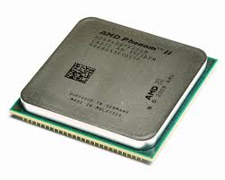
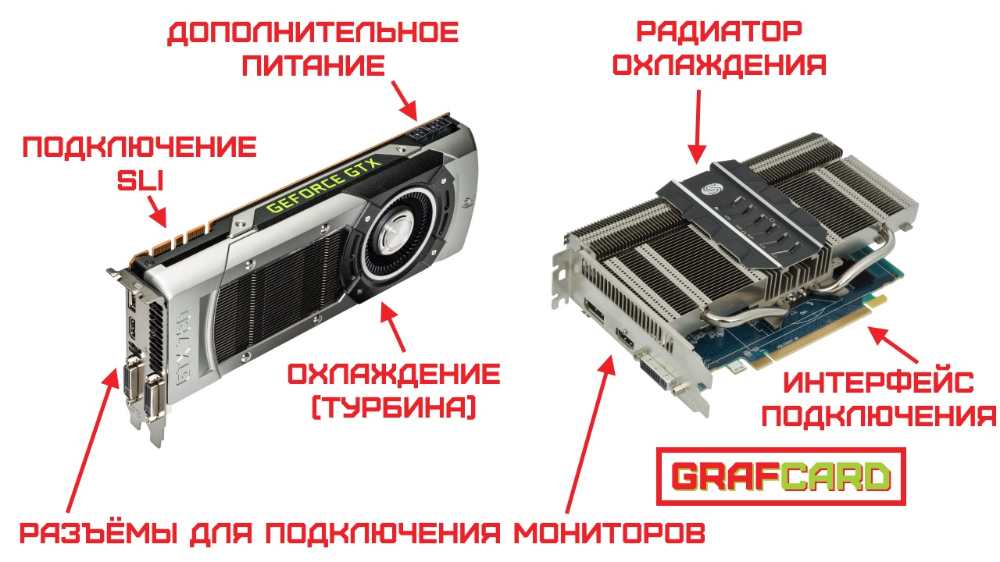
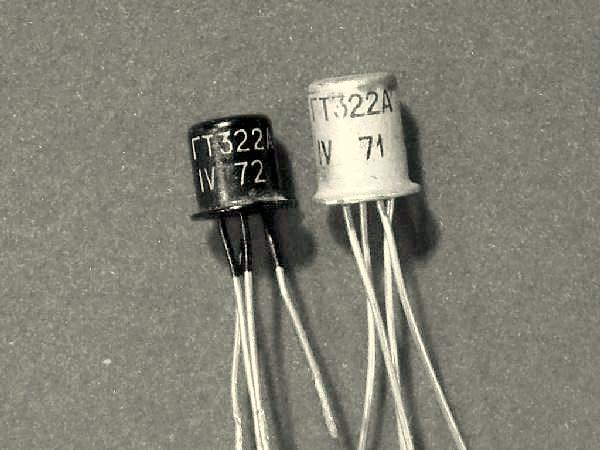
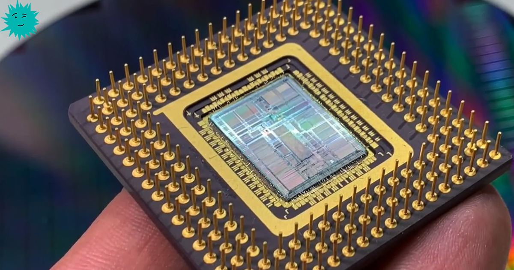

Пример процессора (CPU), одного из ключевых компонентов компьютера

Пример видеокарты (GPU) компьютера
Компьютер — это многофункциональное электронное устройство, которое обрабатывает, хранит и передает
данные, став краеугольным камнем современной жизни. От примитивных вычислительных машин прошлого до
высокопроизводительных систем 2025 года, компьютеры эволюционировали, объединяя в себе сложные
аппаратные компоненты и программное обеспечение для выполнения самых разнообразных задач — от
повседневных операций, таких как работа с текстом, до сложных научных симуляций и рендеринга
виртуальной реальности. Их развитие отражает стремительный прогресс технологий, делая устройства
компактнее, мощнее и доступнее для миллионов людей по всему миру. Основу компьютера составляют
ключевые компоненты: центральный процессор (CPU), управляющий всеми
вычислениями; видеокарта (GPU), отвечающая за обработку графики; материнская плата, связывающая все элементы в единую
систему; оперативная память (RAM), обеспечивающая быстрый доступ к
данным; твердотельный накопитель (SSD) и жесткий
диск (HDD), предназначенные для хранения информации, и Блок
питания, обеспечивающий питание нашего компьютера. Вместе эти элементы создают
мощную и универсальную платформу, лежащую в основе работы, учебы, развлечений и технологических
инноваций.
История поколений компьютеров: научно-технический обзор
Развитие компьютеров принято делить на поколения, каждое из которых характеризуется крупными
технологическими прорывами, существенно изменившими их архитектуру, производительность и функциональные
возможности. Эти этапы эволюции определялись появлением новых компонентов, методов программирования,
способов хранения данных и форм взаимодействия с пользователем.
Первое поколение (1940–1956): Вакуумные лампы
Компьютеры первого поколения базировались на вакуумных лампах, которые выполняли функцию электронных
переключателей и усилителей сигнала. Эти устройства были огромными, занимая целые помещения, и
потребляли значительные объёмы электроэнергии. Вакуумные лампы выделяли большое количество тепла,
что часто приводило к перегреву и сбоям в работе.
Пример вакуумных ламп
Технологии:
Основным элементом, обеспечивающим вычислительные операции, были вакуумные лампы, которые
выполняли роль транзисторов, управляя прохождением тока.
Оперативная память строилась на основе магнитных барабанов и ртутных линий задержки.
Второе поколение (1956–1963): Транзисторы
Использование полупроводниковых транзисторов значительно повысило надёжность и снизило
энергопотребление.
В качестве памяти начали применяться магнитные сердечники, которые обеспечивали более быстрый доступ
к
данным.

Примеры транзисторов
Третье поколение (1964–1971): Интегральные схемы (ИС)
Третье поколение компьютеров характеризуется внедрением интегральных схем (ИС), которые позволили
объединить десятки, а затем и сотни транзисторов на одном кремниевом чипе. Это привело к
значительному
росту производительности и уменьшению габаритов компьютеров.
Технологии:
Использование интегральных схем позволило повысить плотность размещения элементов.
Устройства стали быстрее и экономичнее, так как ИС потребляли меньше энергии.
Введено концептуальное разделение памяти на оперативную (RAM) и постоянную (ROM).
Интегральная схема
Четвёртое поколение (1971–1982): Микропроцессоры
Четвёртое поколение компьютеров ознаменовалось появлением микропроцессоров, которые объединили тысячи
транзисторов на одном чипе. Это привело к значительному росту производительности и уменьшению
габаритов
компьютеров.

Микропроцессор
Технологии:
Использование микропроцессоров на основе ULSI (Ultra Large Scale Integration), содержащих десятки
тысяч транзисторов.
Развитие сетевых технологий и появление локальных сетей (LAN).
Графические интерфейсы (GUI) и мышь, упрощавшие взаимодействие с компьютером.
Пятое поколение (1982 – настоящее время): Искусственный интеллект
Пятое поколение связано с развитием искусственного интеллекта и параллельных вычислений. Компьютеры
стали
более универсальными и доступными для широкого круга пользователей.
Шестое поколение (будущее): Искусственный интеллект и биокомпьютеры
Шестое поколение компьютеров, которое находится в стадии концептуального развития, будет связано с
биокомпьютерами, квантовыми вычислениями и дальнейшим развитием искусственного интеллекта.